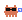
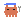
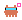

Les harness de muf · Level-art · Window-align · Vérif. dynamique · Lib partagée
muf · harness #4 · ADR-0007

Six générateurs .mjs réimplémentent chacun les mêmes blocs (fetch+retry,
garde idempotente, parsing CLI, cutout). L'ADR-0007 tranche : une
lib de petites primitives pures sous scripts/lib/ — et un
refus explicite du méta-harness, ce « générateur de générateurs » qui
multiplierait le boilerplate au lieu de le supprimer.
pollinations.mjs, idempotent.mjs, cli.mjs,
cutout.mjs (chromaKey prouvé byte-identique sur les 22 PNG enemy) et
contact-sheet.mjs, plus le _template.mjs copiable. Adoption
bornée aux générateurs canoniques ; les scripts legacy sont laissés en
candidats-retrait.
On ne construit pas un « harness qui génère des harness ». Le mot d'ordre de l'ADR :
« Une couche qui émet du code ne supprime pas le boilerplate — elle le multiplie plus vite et le cache derrière un template. »
Abstraction prématurée (anti-YAGNI) et fuyante (anti-SOLID) : figée sur
la forme d'aujourd'hui (« fetch un PNG statique depuis Pollinations »), elle induirait en
erreur le prochain harness qui ne partage pas cette forme. À la place : des primitives
pures importées à la carte, + au plus une anatomie de harness documentée et un
_template.mjs copié à la main. « Un checklist guide, un générateur ossifie. »
pollinations.mjs fetchWithRetry ·
idempotent.mjs skipIfExists · cli.mjs parseAssetArgs ·
cutout.mjs chromaKey (pur, byte-identique dans
cutout-enemies.mjs) · morphology.mjs (morphologie binaire pure)
· _template.mjs (copié à la main, jamais exécuté).
cutout-enemies.mjs (fusionnés, ne se
réduisent pas à une primitive pure) · le keyage ratio isMagenta de
cutout-foreground.mjs (primitive différente, divergerait sur art frais) ·
e2e-lib.mjs reste la lib E2E de facto (seedPlay/readState,
stitchLabeledStrip). Le contact-sheet.mjs projeté n'est pas
construit (YAGNI : un seul consommateur).
cutout-enemies.mjs importe
cutout. Legacy (generate-assets, generate-game-assets, regen-pixel-sprites,
generate-style-demo) laissés en candidats-retrait. Le harness de vérif (ADR-0005)
stitche via e2e-lib.mjs.

dev-tooling-assets Amelia 🛠️
dev-r3f-render Amelia 🎨